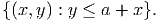
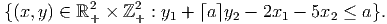

I have neither given nor received any illegal aid on this exam.
- (5 points) Let x ≥ 0 be a continuous variable and let y ≥ 0 be an integer variable. Give
the convex hull of
 - (10 points) Use part (a) to give a valid constraint for the following set:

If the last digit of your RIN is 0,1,2, let M = M1. If the last digit of your RIN is 3,4,5,6, let M = M2. If the last digit of your RIN is 7,8,9, let M = M3.
- (5 points) Show M is not totally unimodular.
- (10 points) Find a subset S of the entries of M with the property that the matrix can be turned into a totally unimodular matrix by changing the sign of the entries in S.
where A is m × n and all vectors are dimensioned appropriately. The dual to the LP relaxation to this problem can be written
Assume (,) is a feasible solution to the dual, with bT non-integral. Let f 0 > 0 denote the fractional part of bT and let f i denote the fractional part of i for i = 1,…,n. Show that any feasible integer solution must satisfy
(Hint: consider cT x.)

- (5 points) Show that the set S is a maximal node packing in this graph.
- (5 points) The clique polytope is the convex hull of all incidence vectors x ∈ B11 of cliques on this graph. Show the clique polytope has dimension 11.
- (10 points) Show that the inequality ∑ i∈Sxi ≤ 1 defines a facet of the clique polytope.

If the last digit of your RIN is 0,2,5,9, let P = Q1 ∪ Q2 and = (1, 0, 1). If the last digit of your RIN is 1,6,8, let P = Q1 ∪Q3 and = (1, 0, 1). If the last digit of your RIN is 3,4,7, let P = Q1 ∪ Q4 and = (0, 1, 1).
- (10 points) Set up the cut generation linear programming problem to find valid inequalities for P that are violated by .
- (10 points) If the last digit of your RIN is 0,2,5,9, show that x1 - x2 + x3 ≤ 1 is
valid for Q1 and Q2.
If the last digit of your RIN is 1,6,8, show that x1 - x2 + x3 ≤ 1 is valid for Q1 and Q3.
If the last digit of your RIN is 3,4,7, show that -x1 + x2 + x3 ≤ 1 is valid for Q1 and Q4.
- (10 points) Show that the inequality in part (b) corresponds to a feasible solution to your LP in part (a).